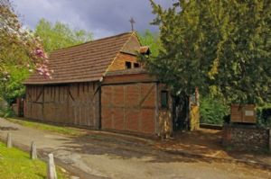

By car
Use Old London Road, Mickleham, RH5 6DU for your journey.

Find Us
Two church buildings in a beautiful setting
in the heart of the Surrey Hills.
Our historic parish church in the village of Mickleham welcomes you for worship and prayer. See the church calendar for current services and events.
Use Old London Road, Mickleham, RH5 6DU for your journey.
Please contact the parish to confirm parking before your visit.
The 465 serves the Mickleham Church stop. Check current arrivals below.
Please contact the parish to confirm arrangements for your access needs.
The Chapel of Ease is part of our parish community in Westhumble, a quieter setting for worship and prayer. Please confirm services and access before visiting.

Use Crabtree Lane, Westhumble, RH5 6BG for your journey.
Please contact the parish to confirm parking near the chapel.
Box Hill & Westhumble is the local station. Plan your onward journey.
Plan your route from Box Hill & Westhumble station before travelling.
Find the church, chapel and railway station.
Load the map to explore the surrounding area.
Loading the map connects to OpenStreetMap.
Box Hill & Westhumble station is on Westhumble Street. Plan your onward journey to the church or chapel.
National Rail station & journeys (opens in a new tab)The 465 serves Mickleham Church and Westhumble Street, linking Kingston, Surbiton, Leatherhead and Dorking.
465 route & arrivals — TfL (opens in a new tab)For directions, parking, accessibility or arrival questions, please contact the parish. We’ll be happy to help.
Contact us